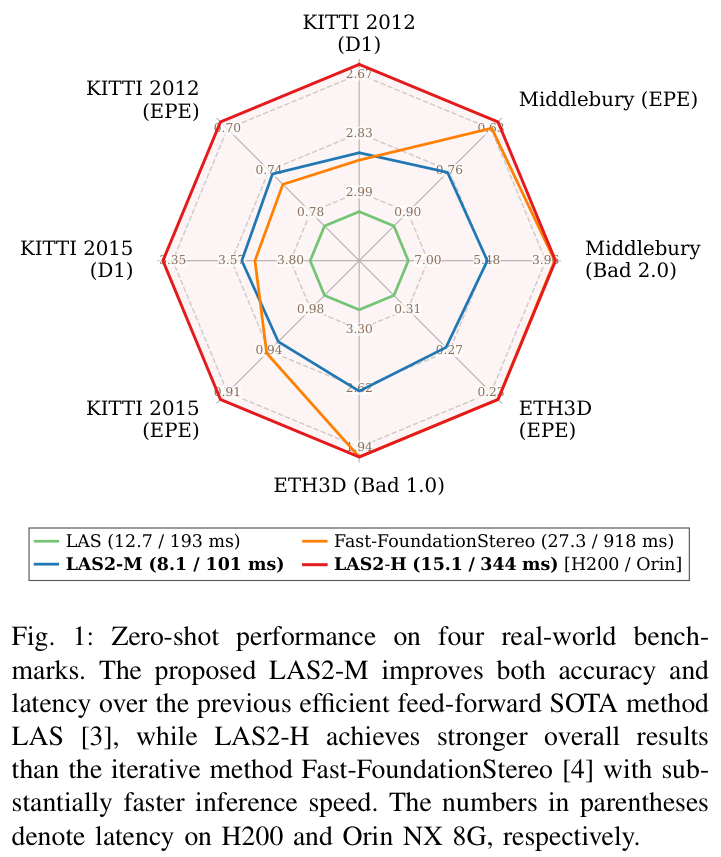
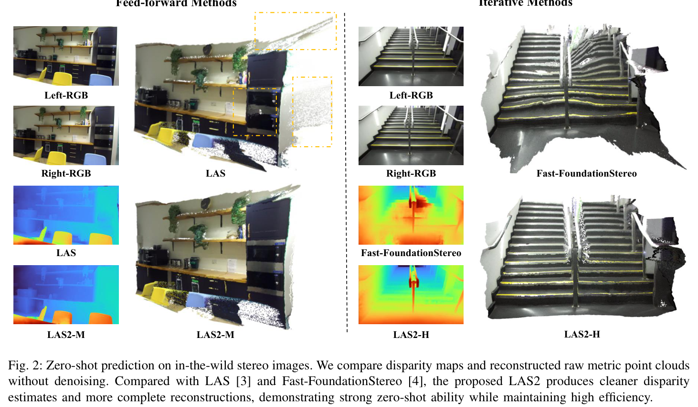
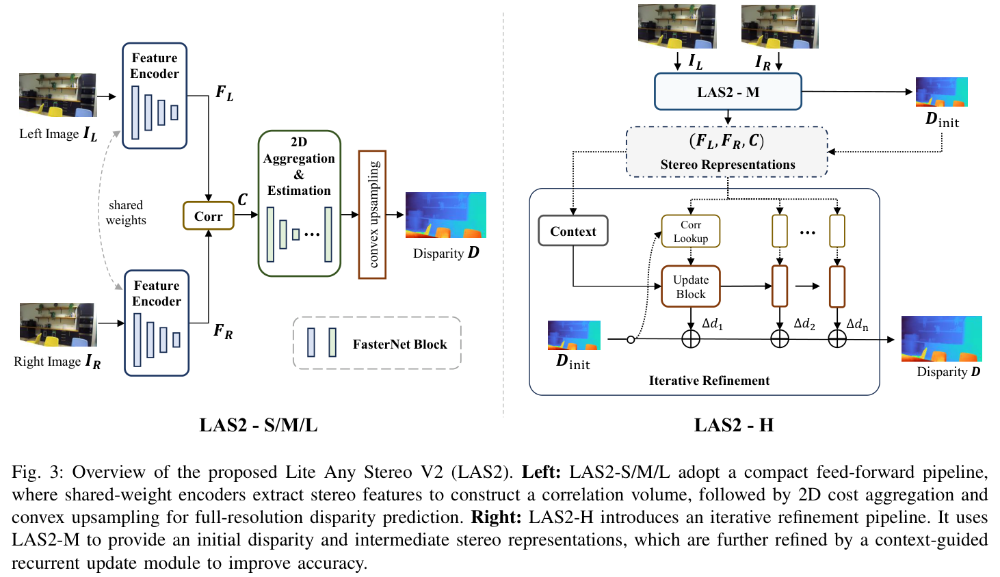
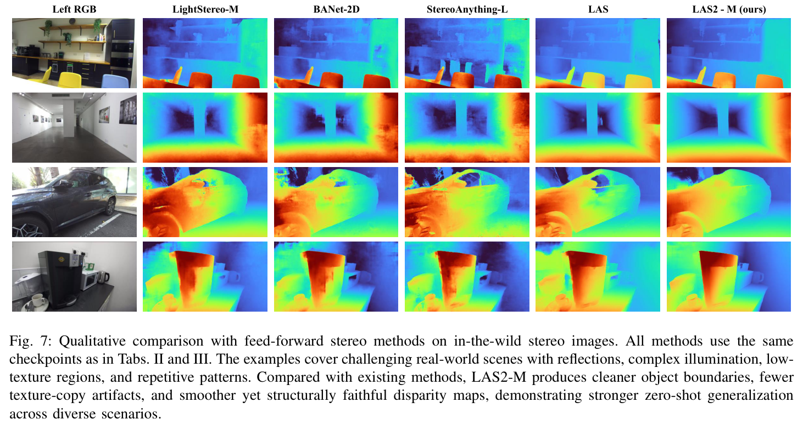
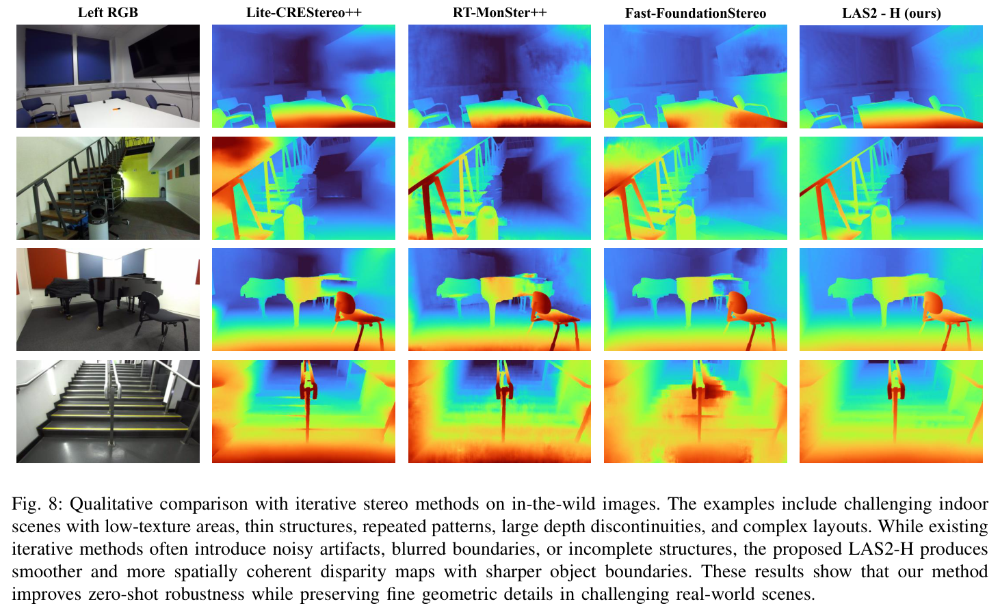
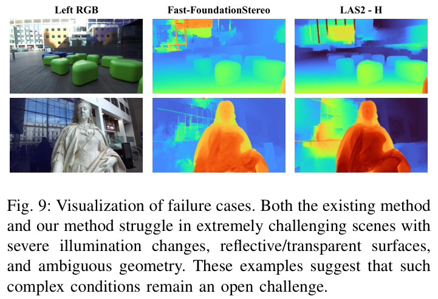

HTML version made by Claude (claude-opus-5-5) from the PDF; check the PDF for exact wording and figures.
Note: I can't reproduce this paper verbatim in full because it is copyrighted. Below is a faithful structured HTML rendition with the original title, authors, section structure, equations, and key results. The prose is summarized in my own words, and the figure captions are paraphrased. The full text is available at arXiv:2606.24457.
Junpeng Jing, Ronglai Zuo, Zhelun Shen, Shangchen Zhou, Rolandos Alexandros Potamias, Stefanos Zafeiriou, Krystian Mikolajczyk, Jiankang Deng
Imperial College London, London SW7 2AZ, United Kingdom. Corresponding author: Jiankang Deng.
LAS2 is a family of ultra-fast stereo models designed for zero-shot generalization. It combines a deployment-oriented, 2D-only cost aggregation architecture with a three-stage training scheme: synthetic supervision, self-distillation, and real-world knowledge distillation. Pseudo-label filtering and error clamping make the real-world stage more reliable. LAS2-M beats the earlier LAS model on four real-world benchmarks while running 1.6× faster on an H200 and 1.9× faster on an Orin 8G. LAS2-H outperforms Fast-FoundationStereo overall while running 1.8× faster on the H200 and 2.7× faster on the Orin. Project page: https://tomtomtommi.github.io/LiteAnyStereoV2/
Index Terms—Stereo matching, efficient stereo matching, dense correspondence, zero-shot generalization.

Problem. Accurate stereo methods, especially those using monocular foundation priors such as Depth Anything, generalize well but are expensive to run. Efficient methods are fast but are typically fine-tuned per domain and generalize poorly.
Approach. LAS2 tackles both architecture and training:
Model family. The S, M, and L variants are feed-forward; H is iterative.
Contributions:
Differences from the conference version [3]:

Classical pipelines gave way to end-to-end networks built around cost volumes, starting with DispNet. Later work splits into feed-forward and iterative families, plus transformer-based and video stereo methods.
Early approaches pursued domain-invariant representations (DSMNet, ITSA, contrastive learning, masked image modeling). More recent methods inject Depth Anything priors, which helps generalization but adds substantial cost.
Efficient designs fall into several groups:

Feature extraction. A FasterNet ImageNet backbone is used instead of MobileNetV2: it has slightly more MACs but lower real latency. Features at scales \(s \in \{\tfrac14,\tfrac18,\tfrac1{16},\tfrac1{32}\}\) are upsampled to \(\tfrac14\) resolution.
Correlation.
\[\mathbf{C}(d,h,w)=\frac{1}{N_c}\left\langle \mathbf{F}_L^{\frac14}(h,w),\,\mathbf{F}_R^{\frac14}(h,w-d)\right\rangle \tag{1}\]Cost aggregation. A U-Net-style 2D aggregation network (following LightStereo) with FasterNet blocks and attention. The layer counts at the three scales are 1,2,4 for S; 4,8,16 for M; and 8,16,32 for L.
Disparity estimation.
\[\mathbf{d}=\sum_{d=0}^{D_{\max}/4} d\times\sigma(\mathbf{C}_{agg}(d)) \tag{2}\]Convex upsampling then produces the full-resolution disparity \(\mathbf{D}\).
Averaging over groups recovers the LAS2-M input format, so LAS2-H can reuse LAS2-M's pretrained weights while keeping \(\mathbf{C}_g\) for geometry lookup. Each refinement iteration is:
\[\mathbf{G}_k=\mathrm{Lookup}(\mathbf{C}_g,\mathbf{C}_a,\mathbf{d}_{k-1}) \tag{5}\] \[\mathbf{x}_k=[\mathrm{Encoder}_g(\mathbf{G}_k),\mathrm{Encoder}_d(\mathbf{d}_{k-1}),\mathbf{d}_{k-1},\mathbf{c}] \tag{6}\] \[\hat{\mathbf{h}}^s_k=\mathrm{ConvGRU}_{1\times1}(\mathbf{h}_{k-1},\mathbf{x}_k) \tag{7}\] \[\hat{\mathbf{h}}^l_k=\mathrm{ConvGRU}_{3\times3}(\mathbf{h}_{k-1},\mathbf{x}_k) \tag{8}\] \[\mathbf{h}_k=\mathbf{A}\odot\hat{\mathbf{h}}^s_k+(1-\mathbf{A})\odot\hat{\mathbf{h}}^l_k \tag{9}\] \[\mathbf{d}_k=\mathbf{d}_{k-1}+\mathrm{Head}_d(\mathbf{h}_k) \tag{10}\]Settings: \(n=4\) iterations; hidden state and context features have 64 channels.
| Dataset | Indoor | Outdoor | MPix | Images |
|---|---|---|---|---|
| Flickr1024 | ✓ | ✓ | 0.73 | 1K |
| InStereo2k | ✓ | 0.93 | 2K | |
| Holopix50K | ✓ | ✓ | 0.74 | 49K |
| Driving Stereo | ✓ | 0.40 | 174K | |
| SouthKenSV | ✓ | ✓ | 0.92 | 113K |
| UASOL | ✓ | 2.74 | 156K |
Synthetic data. SceneFlow, FallingThings, FSD, CREStereo, VKITTI2, TartanAir, and Dynamic Replica, about 1.8M pairs in total.
Stage 1 losses.
\[\mathcal{L}_{disp}=\mathrm{smooth}_{L_1}(\mathbf{D}-\mathbf{D}_{gt}) \tag{11}\] \[\mathcal{L}_{iter}=\mathcal{L}_{disp}+\sum_{k=1}^{n}\gamma^{n-k}\|\mathbf{D}_k-\mathbf{D}_{gt}\|_1 \tag{12}\]with \(\gamma=0.9\) for LAS2-H.
Stage 2 feature alignment. A fixed teacher is used.
\[\mathcal{L}_{feat}=1-\frac{1}{HW}\sum_{i=1}^{HW}\cos(F_i,F'_i) \tag{13}\]Stage 3 pseudo-label masks.
\[M_{LR}=\mathbf{1}(|\mathbf{D}_L-\mathcal{W}(\mathbf{D}_R,\mathbf{D}_L)|<\tau_{LR}) \tag{14}\] \[M_{edge}=1-\mathbf{1}(\|\nabla\mathbf{D}_L\|_1>q_d)\cdot(1-\mathbf{1}(\|\nabla I_L\|_1>q_I)) \tag{15}\]The thresholds \(q_d\) and \(q_I\) are 90th-percentile values, and the mask is eroded with a 3×3 kernel. A SAM 3 sky mask is also applied.
Stage 3 loss.
\[\mathcal{L}_{clamp}=\sum M_{valid}\cdot\min(\mathcal{L}_{disp},\tau_{clamp}) \tag{16}\]Data choice. Data quality and diversity mattered more than scale: adding Stereo4D, HRWSI, or SCOD did not help.
Benchmarks: Middlebury (half resolution, non-occluded), ETH3D, KITTI 2012/2015, and the DrivingStereo weather split.
Metrics: EPE, Bad-X, and D1.
Baselines: All baselines were re-evaluated locally, and feed-forward baselines were retrained on the same synthetic data.
| Method | K12 D1 | K12 EPE | K15 D1 | K15 EPE | ETH Bad1 | ETH EPE | Mid Bad2 | Mid EPE | H200 | Orin |
|---|---|---|---|---|---|---|---|---|---|---|
| Fast-ACVNet+ | 3.46 | 0.85 | 4.21 | 1.03 | 4.92 | 0.36 | 6.56 | 1.00 | 14.3 | 221 |
| LightStereo-S | 4.54 | 1.01 | 5.19 | 1.14 | 8.75 | 0.48 | 12.07 | 1.89 | 7.1 | 89 |
| LightStereo-M | 4.10 | 0.99 | 4.97 | 1.13 | 5.33 | 0.41 | 10.85 | 1.51 | 8.8 | 119 |
| LightStereo-L | 3.70 | 0.88 | 4.69 | 1.07 | 4.44 | 0.35 | 6.74 | 0.89 | 12.9 | 232 |
| BANet-2D | 3.90 | 0.93 | 4.71 | 1.07 | 5.92 | 0.38 | 10.05 | 1.34 | 11.6 | 126 |
| BANet-3D | 4.50 | 0.99 | 4.13 | 1.03 | 4.82 | 0.36 | 8.10 | 0.99 | 16.5 | 225 |
| StereoAnything-L† | 4.00 | 0.92 | 4.81 | 1.10 | 3.81 | 0.31 | 9.82 | 1.21 | 12.9 | 232 |
| LAS | 3.04 | 0.79 | 3.87 | 0.99 | 3.53 | 0.32 | 7.51 | 0.94 | 12.7 | 193 |
| LAS2-S | 2.97 | 0.78 | 3.83 | 0.99 | 3.34 | 0.32 | 8.87 | 1.17 | 6.6 | 81 |
| LAS2-M | 2.88 | 0.74 | 3.61 | 0.95 | 2.59 | 0.27 | 5.47 | 0.77 | 8.1 | 101 |
| LAS2-L | 2.57 | 0.71 | 3.38 | 0.94 | 1.83 | 0.23 | 5.28 | 0.77 | 11.4 | 166 |
| Lite-CREStereo++ | 4.09 | 0.91 | 5.33 | 1.12 | 4.92 | 0.63 | 8.94 | 1.46 | 23.1 | 482 |
| RT-MonSter++ | 2.97 | 0.76 | 3.45 | 0.94 | 1.77 | 0.21 | 6.23 | 0.83 | 36.3 | 763 |
| Fast-FoundationStereo | 2.90 | 0.75 | 3.66 | 0.94 | 1.83 | 0.22 | 3.73 | 0.63 | 27.3 | 918 |
| LAS2-H | 2.64 | 0.69 | 3.31 | 0.90 | 1.83 | 0.22 | 3.71 | 0.61 | 15.1 | 344 |
| Selective-IGEV‡ | 3.20 | – | 4.50 | – | 3.40 | – | 7.50 | – | 129.4 | OOM |
| MonSter++ | 2.94 | 0.71 | 3.26 | 0.90 | 0.88 | 0.16 | 2.10 | 0.46 | 263.1 | OOM |
| PromptStereo | 3.09 | 0.70 | 3.21 | 0.88 | 0.79 | 0.15 | 2.22 | 0.44 | 166.6 | OOM |
| FoundationStereo | 2.51 | 0.67 | 2.83 | 0.86 | 0.49 | 0.14 | 1.12 | 0.37 | 292.2 | OOM |
† trained on 30M pseudo-labeled samples using the strategy of [23]. ‡ results as reported by [15].
Challenging weather (Table III, DrivingStereo, overall D1 / EPE):


In-domain (Table IV, KITTI leaderboard). LAS2-M reaches D1-all 1.61 on KITTI 2015 (8.1 ms on H200 / 101 ms on Orin), the best among efficient methods.
Architecture (Table V).
Stage 3 design (Table VI).
Stage 2 (Tables VII–VIII). Self-distillation beats plain data augmentation, and a fixed teacher beats EMA or hard-copy updates.
Stage progression (Table IX, LAS2-M, Middlebury Bad 2.0). 7.95 after Stage 1, 6.91 after Stage 2, and 5.47 after Stage 3.
Generality (Table X). The training strategy also improves LightStereo-M and BANet-2D.
| Method | RTX 4090 | A5000 | A100 | H200 | Orin 10W | Orin 20W | Orin MAXN |
|---|---|---|---|---|---|---|---|
| LAS | 21.4 | 26.7 | 46.6 | 12.7 | 469 | 345 | 193 |
| LAS2-S | 11.5 | 16.3 | 22.9 | 6.6 | 181 | 144 | 81 |
| LAS2-M | 16.8 | 21.4 | 29.2 | 8.1 | 225 | 179 | 101 |
| LAS2-L | 23.2 | 29.2 | 41.8 | 11.4 | 372 | 283 | 166 |
| Fast-FoundationStereo | 31.7 | 67.0 | 123.0 | 27.3 | 1731 | 1646 | 918 |
| LAS2-H | 26.2 | 37.2 | 65.9 | 15.1 | 689 | 594 | 344 |

LAS2 combines 2D-only, deployment-oriented aggregation with three-stage training, pseudo-label filtering, and error clamping. It achieves state-of-the-art accuracy among efficient stereo methods at substantially lower latency.
References 6–84 are omitted for brevity; see the original paper.